Visual Processing Pipeline & Fusion Architecture¶
Detailed specification from Chapter 4.3 of: Z. Ruso, "Reinforcement Learning for Cooperative Multi-View Depth-Based Perception in Autonomous UAV Navigation," MSc Thesis, UCL, 2025.
Overview¶
The visual pipeline compresses high-dimensional depth images into compact latent representations using a pre-trained Variational Autoencoder (VAE), then fuses the two camera streams (ego + exo) through a learned gating mechanism before the policy network.
Drone D455 (270x480) ──→ Normalize ──→ Noise ──→ Frozen VAE ──→ z_ego (64D) ──┐
│
┌─────────────────────┤
│ Gated Fusion │
│ z = g*s' + (1-g)*e'│
└─────────┬───────────┘
│
Static D455 (270x480) ──→ Normalize ──→ Noise ──→ Frozen VAE ──→ z_exo (64D) ──┘
│
[Proprio (22D)]
│
┌─────────▼──────────┐
│ MLP 512→256→64 │
│ GRU(64) │
│ Actor + Critic │
└────────────────────┘
Stage 1: Depth Preprocessing¶
Sensor Model¶
Both cameras are modeled as Intel RealSense D455 with identical intrinsics:
| Parameter | Value |
|---|---|
| Resolution | 480 x 270 (W x H) |
| Aspect ratio | 16:9 |
| Horizontal FOV | 87.0 deg |
| Vertical FOV | ~56.2 deg |
| Min depth | 0.4 m |
| Max depth | 20.0 m |
Depth Normalization¶
Raw depth D (meters) is clipped and mapped to the unit interval:
This standardizes dynamic range across tasks and seeds. Invalid/missing values are mapped to the far plane (1.0). Downstream encoders operate on bounded [0, 1] inputs.
Noise Application (curriculum-dependent)¶
Applied post-normalization to emulate real sensor artifacts:
- Gaussian noise: Additive N(0, sigma^2) per pixel; sigma grows with curriculum level
- Pixel dropout: Bernoulli masking (pixel set to 0) at rate p; p grows with level
- Frame freeze: Entire frame held from previous step at probability p_freeze
- Frame blank: Entire frame zeroed at probability p_blank
Noise is applied per frame (not carried across steps). Camera viewpoint jitter is applied per episode (at reset).
Sensor Views¶
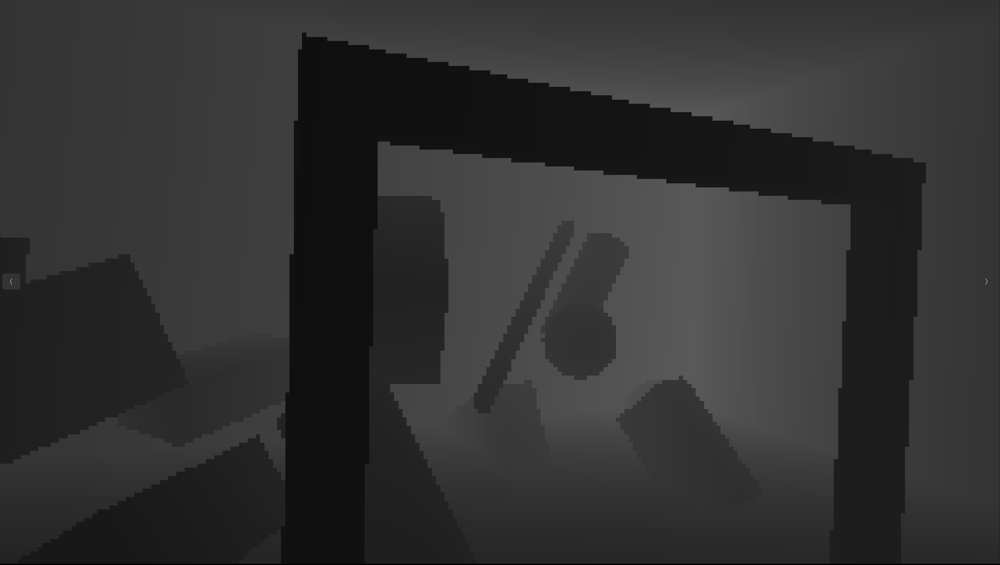
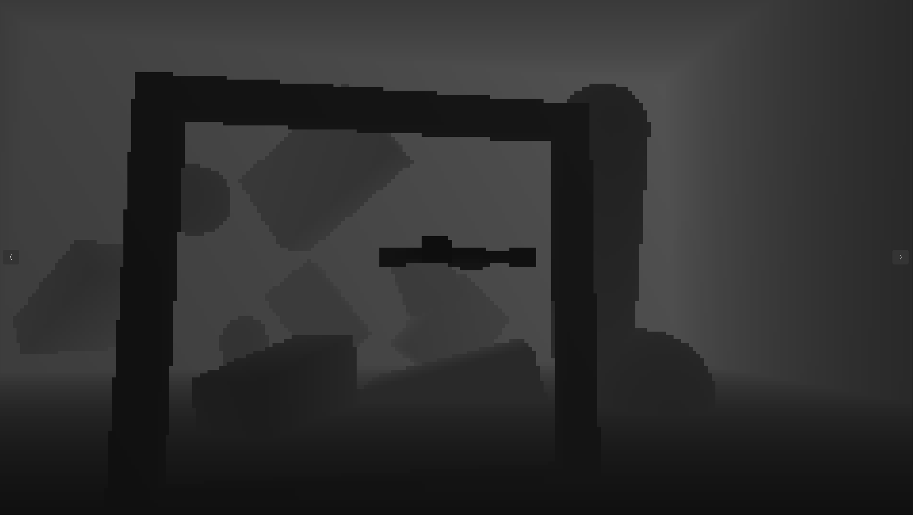
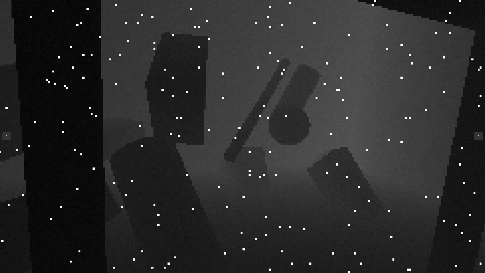
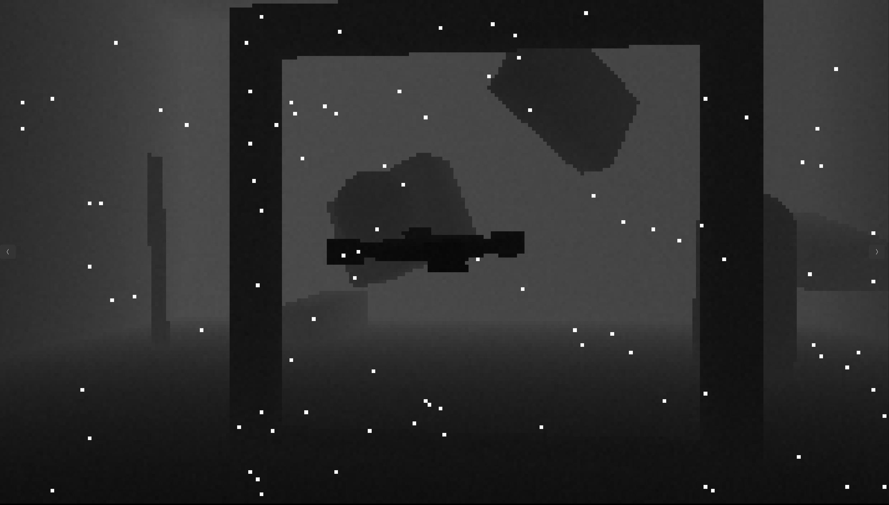
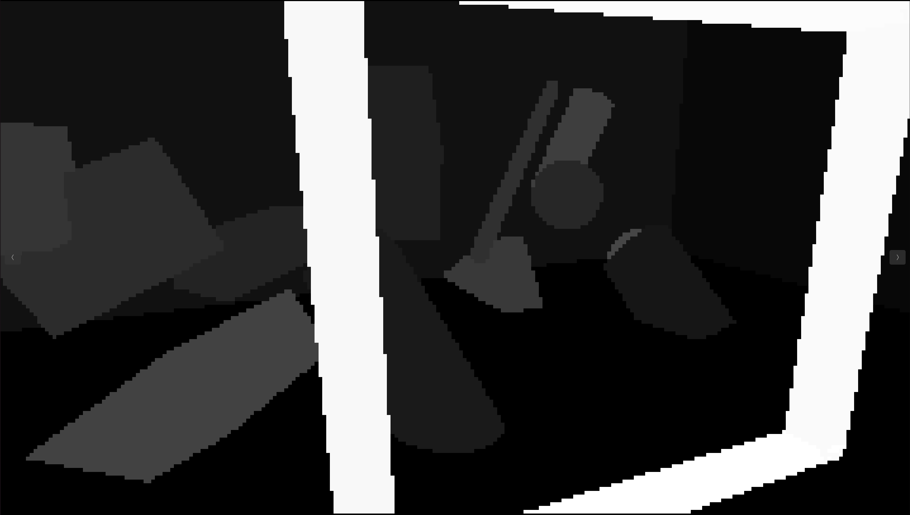
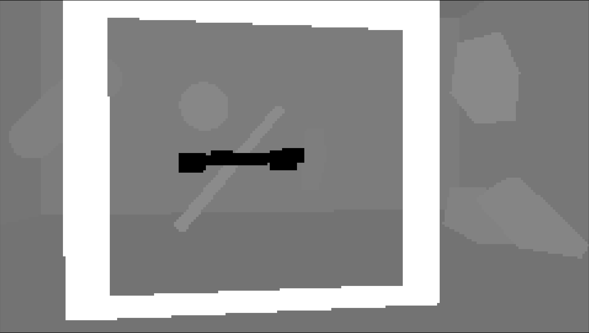
Figure 3.6: Egocentric (drone) and exocentric (static) camera views — clean depth (top), noised depth (middle), and segmentation (bottom).
Stage 2: Variational Autoencoder (VAE)¶
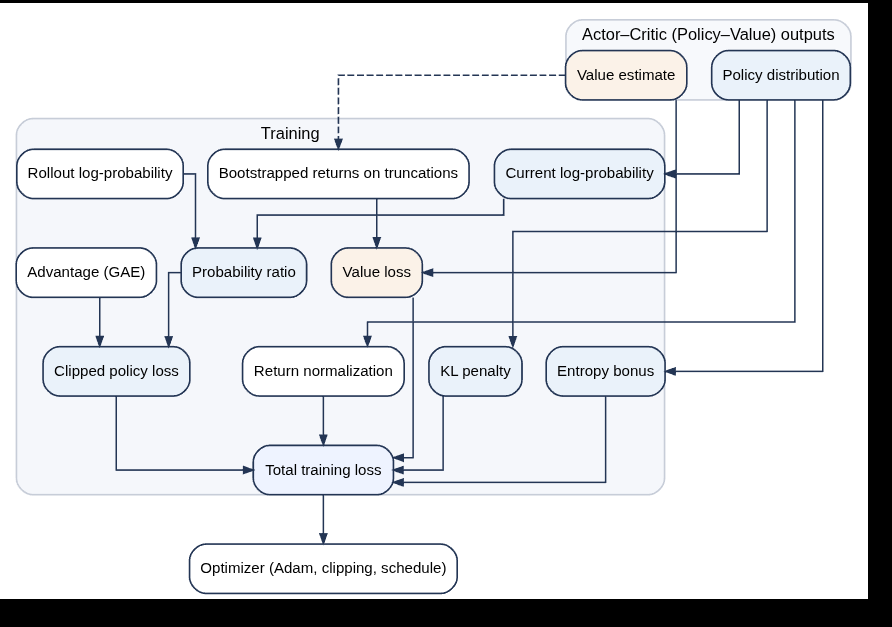
Figure 4.3: VAE encoder-decoder architecture.Architecture: Collision-Aware VAE¶
The VAE is based on a ResNet8 encoder-decoder trained offline to compress depth frames into compact latent representations. The "collision-aware" aspect means the VAE was trained on depth images from navigation scenarios where collision-relevant features (gate edges, obstacle silhouettes, ground proximity) dominate.
Encoder (qphi)¶
Input: Depth image (1 x 270 x 480)
→ Conv block 0: stride-2 conv → BN → ReLU → residual skip
→ Conv block 0_1: conv → BN → ReLU → residual skip
→ Conv block 1_0: stride-2 conv → BN → ReLU → residual skip (downsampled shortcut)
→ Conv block 1_1: conv → BN → ReLU → residual skip
→ Conv block 2_0: stride-2 conv → BN → ReLU → residual skip (downsampled shortcut)
→ Conv block 2_1: conv → BN → ReLU → residual skip
→ Conv block 3_0: stride-2 conv → BN → ReLU → residual skip (downsampled shortcut)
→ Flatten
→ Linear → (mu, log_var) each 64D
Reparameterization¶
During RL inference, only mu is used (deterministic encoding).
Decoder (ptheta) — used only during VAE pretraining¶
Inverse architecture with transposed convolutions, sigmoid output activation.
Training Loss (beta-VAE)¶
| Parameter | Value |
|---|---|
| Latent dimension | 64 |
| beta (KL weight) | 3.0 |
| Training resolution | 270 x 480 (matches D455) |
The beta=3 weighting encourages a structured, disentangled latent space at the cost of slightly reduced reconstruction fidelity.
Shared Weights¶
A single shared VAE is used for both ego and exo camera streams. This design choice:
- Halves GPU memory (one encoder instead of two)
- Encourages a common geometric basis across viewpoints
- Simplifies deployment (one model to optimize/quantize)
The trade-off: a shared encoder cannot be simultaneously optimized for both viewpoint-specific features. However, since both cameras are identical D455 sensors capturing depth, the geometric primitives (edges, surfaces, distances) are largely viewpoint-invariant.
Frozen During RL¶
The VAE encoder weights are frozen during RL training. Only the fusion gate, MLP, GRU, and policy/value heads are learned. This:
- Stabilizes training by preventing representation collapse
- Increases throughput (no encoder gradients)
- Preserves the pre-trained geometric basis
The trade-off: end-to-end adaptivity is sacrificed. The frozen encoder may miss task-specific visual features that emerge during training.
Pre-trained Weights¶
Stage 3: Gated Late Fusion¶
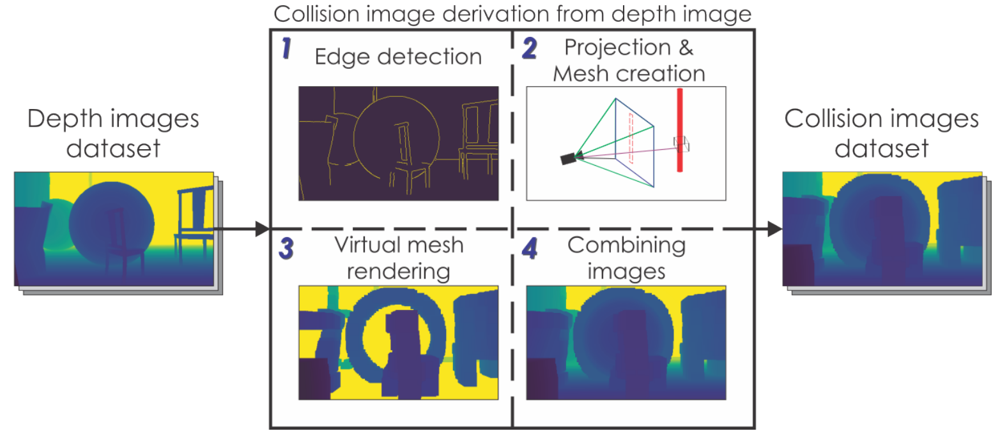
Figure 4.5: Dual depth image fusion architecture — gated late fusion with per-feature gating.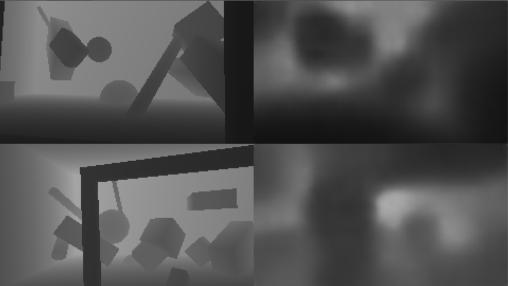
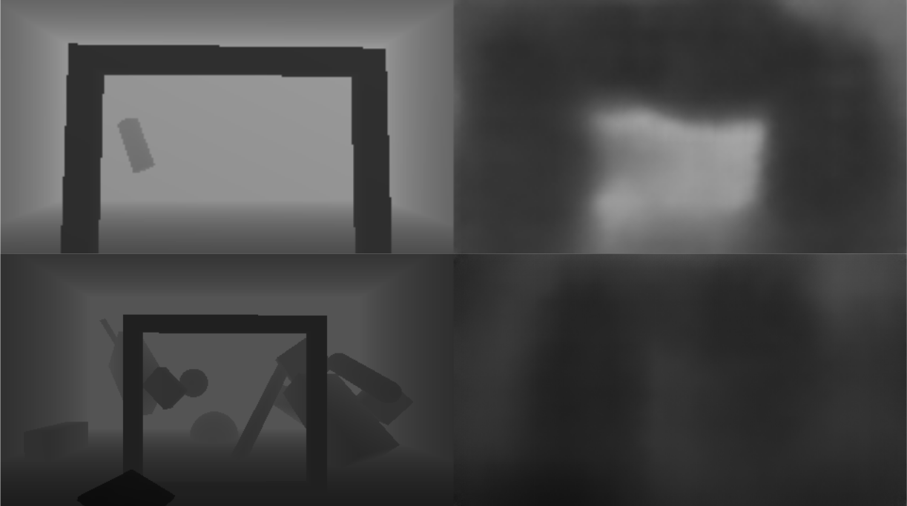
Figure 4.6: Fusion variants — gated late fusion (left) vs. early concatenation (right).Architecture¶
Two fusion strategies are supported; gated late fusion is the default and recommended approach.
Gated Late Fusion (default)¶
e' = LayerNorm(z_ego) → Linear(64→64) → ELU # Ego projection
s' = LayerNorm(z_exo) → Linear(64→64) → ELU # Static projection
# Gate network
g_input = [e', s'] # Concatenate (128D)
g_fuse = sigmoid(Linear(ELU(Linear(128→64)))→64) # Per-feature gate (64D)
# Fused output
z = g_fuse * s' + (1 - g_fuse) * e' # Weighted combination (64D)
Key properties:
- Per-feature gating (64 independent sigmoid values) when gate_per_feature=True
- Scalar gating (single sigmoid value broadcast to all 64 dims) when gate_per_feature=False
- Gate values near 1.0 favor the static camera; near 0.0 favor the drone camera
- The agent learns to dynamically attend to the more informative viewpoint
Concatenation Fusion (alternative)¶
Simpler, no learned gating. Both streams contribute equally.
When to Use Which¶
| Condition | Recommended fusion |
|---|---|
| Both views consistently clean | Concatenation (simpler, faster convergence) |
| Visibility fluctuates between views | Gated (can suppress noisy/uninformative stream) |
| Views provide complementary info at different phases | Gated (can shift reliance dynamically) |
| Compute budget is very tight | Concatenation (fewer parameters) |
Ablation: Stream Removal¶
When a camera stream is ablated (e.g., DroneOnly mode), the corresponding branch is short-circuited:
# DroneOnly: zero static latents, bypass fusion
s' = 0
z = e' = P_e(e)
# No gradients flow through the static branch
This is implemented via exact-slice zeroing of obs[86:150] before normalization.
Stage 4: Policy Encoder (MLP + GRU)¶
MLP Tail¶
The fused visual code (64D) is concatenated with the 22D proprioceptive state:
Input: [proprio (22D), z_fused (64D)] = 86D
→ Linear(86→512) → ELU
→ Linear(512→256) → ELU
→ Linear(256→64) → ELU
→ Output: 64D embedding
This hourglass architecture (86→512→256→64) provides capacity and then compresses to match the GRU input dimension, avoiding extra projection layers.
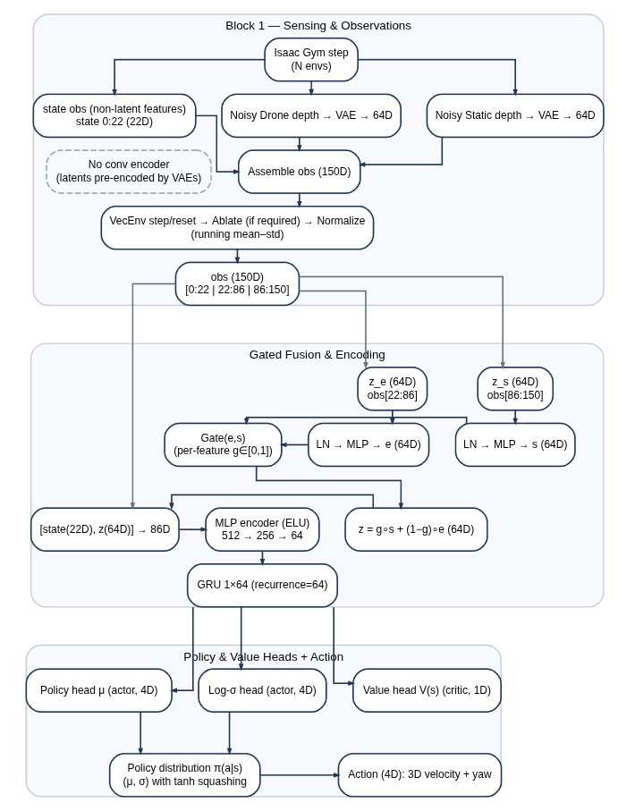
Figure 4.7: GRU — reset gate r_t controls exposure of previous state; update gate z_t blends old and candidate states.GRU (Gated Recurrent Unit)¶
h_t = GRU(h_{t-1}, encoder_output_t)
Hidden size: 64
Layers: 1
Unroll length: 32 (training), 64 (recurrence length)
The GRU provides temporal memory for: - Handling partial observability (occluded gate, frame dropouts) - Compensating for sensor/actuator latency - Retaining information when one camera view is temporarily uninformative - Integrating motion cues across time steps
Actor and Critic Heads¶
Both share the GRU hidden state:
Diagonal Gaussian policy with adaptive standard deviation.
Total Parameter Count¶
| Component | Parameters |
|---|---|
| Encoder MLP (86→512→256→64) | ~225k |
| GRU (64 hidden, 1 layer) | ~25k |
| Actor + Critic heads | ~300 |
| Fusion gate network | ~12k |
| Total trainable | ~262k |
| VAE encoder (frozen) | ~500k (not trained during RL) |
This compact architecture is PPO-friendly for ~2M on-policy steps.
Fusion Diagnostics¶
During training and evaluation, several fusion metrics are logged:
| Metric | What it reveals |
|---|---|
| Gate activation mean (mu_gate) | Which stream the policy favors on average |
| Gate activation std (sigma_gate) | How much gating varies across features |
| Ego branch norm ( | |
| Static branch norm ( | |
| Fused norm ( | |
| Gradient attribution shares | Which observation slice drives learning (state/ego/exo %) |
Implementation Files¶
| File | Purpose |
|---|---|
aerial_gym/utils/vae/VAE.py |
ResNet8 encoder/decoder architecture |
aerial_gym/utils/vae/vae_image_encoder.py |
VAE wrapper for RL integration |
aerial_gym/rl_training/sample_factory/aerialgym_examples/dual_fusion_encoder.py |
Gated/concat fusion + MLP encoder |
aerial_gym/task/navigation_task_gate/camera_observations.py |
Depth preprocessing + noise + VAE encoding |
aerial_gym/task/schemas.py |
150D observation layout (slice indices) |